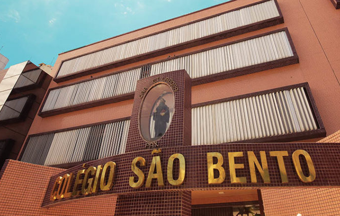

Criciúma é um município brasileiro da Região Sul, localizado no Estado de
Santa Catarina, na mesorregião do Sul Catarinense. Tem 185.506 habitantes (segundo o
IBGE/2008), sendo a cidade mais populosa do Sul Catarinense e a quinta do Estado de Santa
Catarina.
O nome Criciúma deriva de uma gramínea brasileira (Criciuma asymmetrica,
que é aparentada com a Chusquea ramosíssima), que parece um bambu e era bastante
encontrada na região. No idioma indígena local, o nome Criciuma corresponde à "taquara
pequena".
Em meados do século XVIII, o governo imperial cedeu ao nobre Jerônimo de
Castro a concessão de sesmaria da região, com o intuito de desenvolver a agricultura, a criação
de gado e, mais tarde, o extrativismo vegetal e, ao mesmo tempo, povoar e colonizar o território.
A gleba ficava onde hoje situa-se o município de Urussanga e nela achava-se incluído o atual
território de Criciúma. Durante muitos anos, porém, a região permaneceu desabitada, não tendo
recebido colonizadores para o desbravamento da região.
A fundação de Criciúma aconteceu somente no final do século XIX, durante o
ciclo da imigração européia.
A data de 06 de janeiro de 1880 é considerada como aquela da fundação e
início da colonização do município, com a chegada das primeiras famílias de italianos,
provenientes da região do Vêneto, norte da Itália. Eram um total de 22 famílias, que somavam
141 pessoas.
Esses imigrantes, apesar de encontrarem inúmeras dificuldades, foram
responsáveis por desbravar a região, construindo casas, estradas e escolas e tendo, no princípio,
a agricultura como principal atividade econômica.
Em 1890, chegaram na região imigrantes alemães e poloneses que, junto aos
italianos e também aos descendentes de portugueses, oriundos da região de Laguna,
contribuíram, de forma decisiva, no desenvolvimento do município.
Em 1913, teve início o ciclo do carvão, com a descoberta das primeiras jazidas
do minério. Este fato foi o grande propulsor do desenvolvimento econômico do município,
gerando empregos e atraindo investimentos, tendo seu auge entre as décadas de 1940 a 1970.
Durante este período, Criciúma ficou conhecida como a “Capital Brasileira do Carvão”.
A emancipação de Criciúma ocorreu em 1925, com o seu desmembramento da
comarca de Araranguá.
A partir de 1947, a indústria cerâmica passou a desenvolver-se no município,
assumindo papel de fundamental importância, no contexto econômico da região, elevando
Criciúma a um dos grandes pólos produtores mundiais, sendo a cerâmica criciumense
reconhecida pela sua qualidade.
Com uma economia diversificada, com um povo aguerrido e empreendedor,
Criciúma figura, hoje, como uma cidade em franco desenvolvimento, sendo uma das principais
cidades catarinenses e centro econômico e industrial da região sul do estado.
Em 07 de dezembro de 2000, resgatando suas origens, Criciúma tornou-se
cidade-irmã de Vittorio Vêneto, cidade italiana, berço de muitos imigrantes que contribuíram
para a fundação do município.
CASA DA CRIANÇA NOSSA SENHORA DE FÁTIMA –
HOJE COLÉGIO SÃO BENTO
O Colégio São Bento iniciou suas atividades no dia 10 de março de 1945, com
o nome de Casa da Criança Nossa Senhora de Fátima, criada pelo Círculo Operário São José
da Paróquia São José, Criciúma – SC. Inicialmente, começou a funcionar como Jardim de
Infância, numa pequena casa, na qual eram acolhidas as crianças pobres e carentes da região
carbonífera do sul catarinense, oferecendo-lhes uma boa educação.
As primeiras Irmãs a trabalharem nesta casa foram as Irmãs Escolares de Nossa
Senhora, sendo Diretora, na época, Irmã Dihetildes Mosler, auxiliada por Rute Issler, Cléa
Motta Gouveia e Doraci Silva, que eram juvenistas. Elas assumiram a Casa da Criança Nossa
Senhora de Fátima em 05 de julho de 1945.
Desde o início, procurou-se incutir nas crianças uma educação baseada nos
valores humanos e cristãos. As atividades pedagógicas tinham como objetivo atender às
necessidades básicas das crianças, desenvolvendo, de modo gradativo, suas habilidades.
Ministravam-se aulas de canto, bordados, educação religiosa, atividades recreativas, tendo a
preocupação de iniciar e terminar as atividades escolares com a oração. A disciplina era bastante
rígida, de acordo com as normas da época.
Em 1948, a Casa da Criança Nossa Senhora de Fátima passou a ter duas alas:
Uma para a residência das Irmãs e a outra para as salas de aula.
As Irmãs Escolares de Nossa Senhora permaneceram na obra por dois anos e
meio e, em 1948, partiram para outros lugares, em busca de melhores condições de trabalho,
pois a Casa da Criança atendia crianças carentes e a remuneração das Irmãs era pouca.
No entanto, a Casa da Criança Nossa Senhora de Fátima não podia fechar suas
portas para as crianças pobres e carentes da região. E, para que o Jardim de Infância não fosse
entregue ao Governo, algumas senhoras leigas assumiram a Casa da Criança Nossa Senhora de
Fátima, sendo presidente a senhora Maria Zilli Thomé, auxiliada por Ceci Napoleão, que
ministravam as aulas, após o afastamento das Irmãs.
